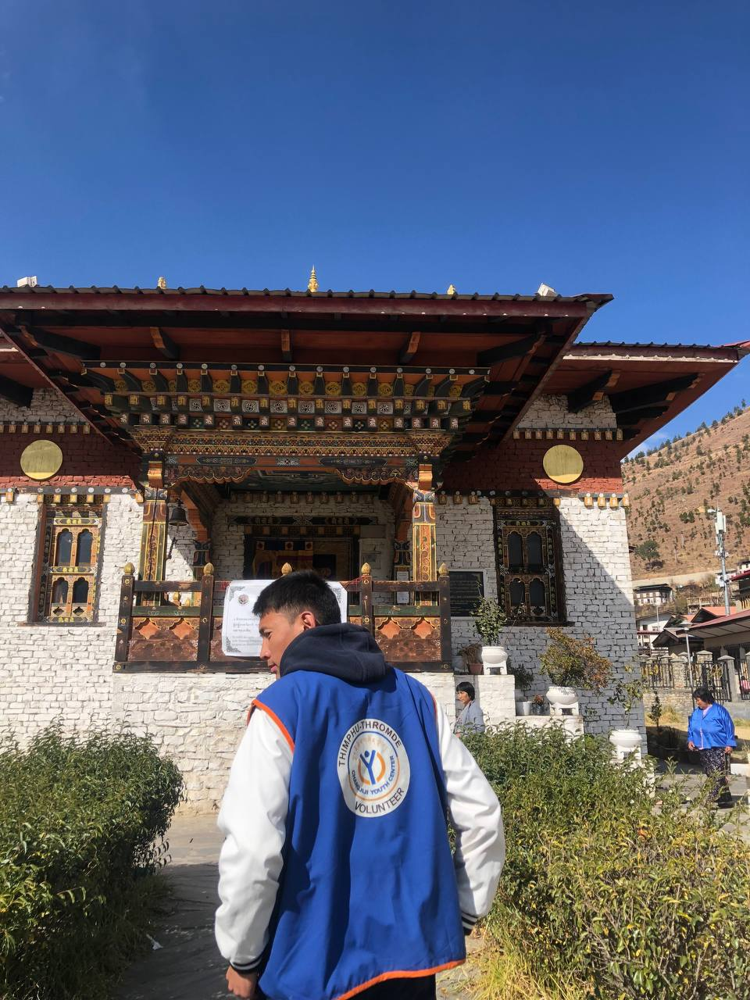

- Engaged in community programs at Changjiji Youth Center, supporting youth growth.
- Organized life skills workshops: resume writing, interviews, and planning.
- Tutored students in AFHs, offering group and individual academic support.
- Led Winter Programs with arts, sports, and service projects, creating impactful memories.
- Learned empathy and resilience through volunteering, enriching the community.

Voluntary Works
